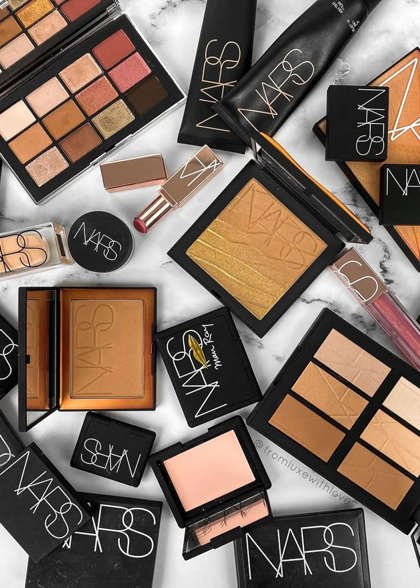

A NARS é uma marca de maquiagem de luxo criada por François Nars em 1994. Reconhecida por sua ousadia e criatividade, a marca incentiva a autoexpressão e valoriza a individualidade. Seus produtos combinam qualidade, arte e sofisticação, inspirando pessoas a se sentirem autênticas e confiantes.
